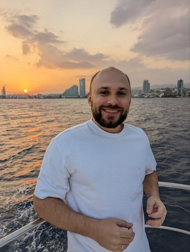

Эдуард Македонский
Senior DevOps Engineer — Kubernetes • GitOps • Terraform • AWS
13+ лет в инфраструктуре, последние 6 — DevOps.
Kubernetes
Helm
ArgoCD
Terraform
Ansible
GitLab CI
Jenkins
Docker
vSphere / KVM
AWS / GCP / Yandex
Prometheus
Grafana
ELK
Sentry
PostgreSQL / MongoDB
Kafka / Redis / RabbitMQ
Python / Bash
Опыт
03.2025 — наст.
Senior DevOps Engineer
Проектная работа
- litegallery.io
- Поднял мониторинг и алертинг; закрыл OOM, отмасштабировал узлы и кластера (capacity & autoscaling).
- С нуля описал GitOps: ArgoCD + GitLab CI.
- Спроектировал ванильный Kubernetes, подготовил план ухода с Rancher/Swarm.
- Документация: runbook, схема сервисов.
- Интервьюировал DevOps-инженеров; принято решение найма в штат вместо парттайма.
- Сайд-таски: саппорт онлайн-репетиторства (PHP/Laravel, nginx, certbot); pet-SaaS-мониторинг (gRPC-агенты на Go, визуализация).
06.2024 — 02.2025
Senior DevOps Engineer
МТС / KION
- Создание новой инфраструктуры для онлайн-кинотеатра: dev/stage/prod, георезерв.
- Управление микросервисами через Helm/Kubernetes; релизы и окружения как код.
- CI/CD пайплайны под сервисы и инфраструктуру; артефакты в Harbor/Artifactory.
- Observability: метрики, логи, алерты (Prometheus, Grafana, ELK, Sentry, VictoriaMetrics).
- HLD/LLD схемы, участие в архитектурных решениях; нагрузочное тестирование.
- Ansible/Terraform для провижининга и управления; Vault для секретов.
08.2022 — 04.2024
Senior DevOps Engineer
Azul (Azul JDK — Кипр)
- Новый отказоустойчивый Jenkins по IaC; миграции и DR-процедуры.
- Внедрил Nexus; поддержка сборок Azul JDK под разные платформы.
- Публикация образов в Docker Hub (azul/zulu-openjdk).
- Менторинг младшего инженера: планирование, раздача задач, ревью.
- SDLC под SOC2: контроль изменений, трассировка, доступы.
- Снижение расходов AWS ≈×2: чистки, right-sizing, тэггинг, отчёты (CloudHealth).
08.2021 — 07.2022
DevOps Engineer
Киберпротект (Акронис информзащита)
- Перенос инсталляций Jenkins (freestyle/JJB).
- Переход на IaC (Ansible/JobDSL/groovy libs).
- Make, Docker, Helm; npm/pypi/rpm; Artifactory, registry, ChartMuseum.
- Python-скрипты для API-интеграций; деплой прод-облака (Ansible).
- Zabbix; администрирование on-prem Atlassian (Bitbucket/Jira/Confluence).
- Результат: перенос инфраструктуры сборки из глобальной компании в локальную.
02.2019 — 08.2021
SDET
Wallarm
- FAST (DAST-сканер): сборка/тест/релиз; интеграции с CI/CD (GitLab/Jenkins/CircleCI/Bamboo/Azure DevOps).
- Security-тесты OWASP Top-10; автотесты (Python+pytest+requests+allure); демо/доки.
- WAF Node: релиз Jenkins (scripted, Packer, Make/CMake); тесты установки (Ansible/Terraform/bash); RSpec; релизы под Debian/Ubuntu/CentOS/AL2, Docker/K8s, AWS/GCP/Yandex.
- Результат: цикл релиза сокращён ~с 2 мес до 2 нед.
06.2017 — 02.2019
Старший специалист по тестированию
Код Безопасности
- UTM Континент 4: функциональное, интеграционное и нагрузочное тестирование (Yandex Tank, Ixia); анализ требований, разработка тест-кейсов и документации.
- Создание тестовых стендов, автоматизация проверок (bash, Python), эскалация и triage инцидентов.
- Тесное взаимодействие с отделом разработки и техподдержкой; демонстрации, вебинары, user manuals.
2011 — 2017
Ранний опыт (системное администрирование)
KrasotkaPro · MasterTEX · Нева-Ритейл · RIK-Computers
- Создание и поддержка ИТ-инфраструктуры: офисы, склады, филиалы (~250 ПК, десятки удалённых точек).
- Сети, серверы, AD, виртуализация (vSphere/KVM), резервное копирование, мониторинг.
- Хелпдеск, инциденты, выезды; базовая автоматизация и документация.
Проекты
- KION (МТС): Kubernetes, GitLab, Artifactory, Vault, Helm, Terraform, Postgres, MongoDB; observability и нагрузочные стенды.
- Azul JDK: SDLC под SOC2, отказоустойчивый Jenkins по IaC; Nexus; оптимизация AWS-затрат ~×2.
- Киберпротект: перенос и адаптация инфраструктуры сборки; единый Jenkins-стэк.
- litegallery.io: повышение надёжности и стабильности инфры.
- Pet-проект: SaaS-мониторинг (Go-агенты, gRPC, визуализация).
Образование и сертификация
Образование
Неполное высшее — ВШЭ, Социология
Неполное высшее — ВШЭ, Социология
Сертификации
CKA

CKA
Курсы
Kubernetes (Slerm), Python Automation (С. Пирогов), Linux Security (МГТУ им. Баумана), Cisco CCNP (networkeducation)
Kubernetes (Slerm), Python Automation (С. Пирогов), Linux Security (МГТУ им. Баумана), Cisco CCNP (networkeducation)
Языки
RU — родной; EN — B2
RU — родной; EN — B2